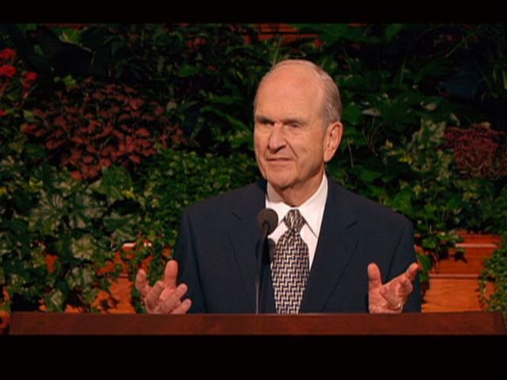
Latter-day Saints read the Bible and Book of Mormon as distinct records that testify together of Jesus Christ. The point is not that one book makes the other unnecessary, but that multiple scriptural witnesses can deepen understanding of the same Savior and gospel.
Explore the histories through the prophets’ experiences, then choose a paired reading. Tap a picture to study its passages or see the full scene.
Watch and study
Why Read Two Witnesses of Jesus Christ?
In the short message Bible and Book of Mormon, Elder Russell M. Nelson discusses both books as witnesses of Jesus Christ. Listen for what a second witness contributes, then choose a pair of passages you can actually read and compare.
Begin with John 20:1-18. The account moves from an empty tomb to Mary Magdalene recognizing Jesus when He addresses her. Her encounter leads to her report to the disciples. Record one detail from this particular witness before turning to the Book of Mormon account. A comparison becomes clearer when you first understand each text on its own.
The Bible’s history and witness
Words preserved across generations
Begin with two scenes the Book of Mormon invites us to revisit: Isaiah’s call and Moses’ raised serpent. They show how later prophets return to earlier scripture.
{kind=link}
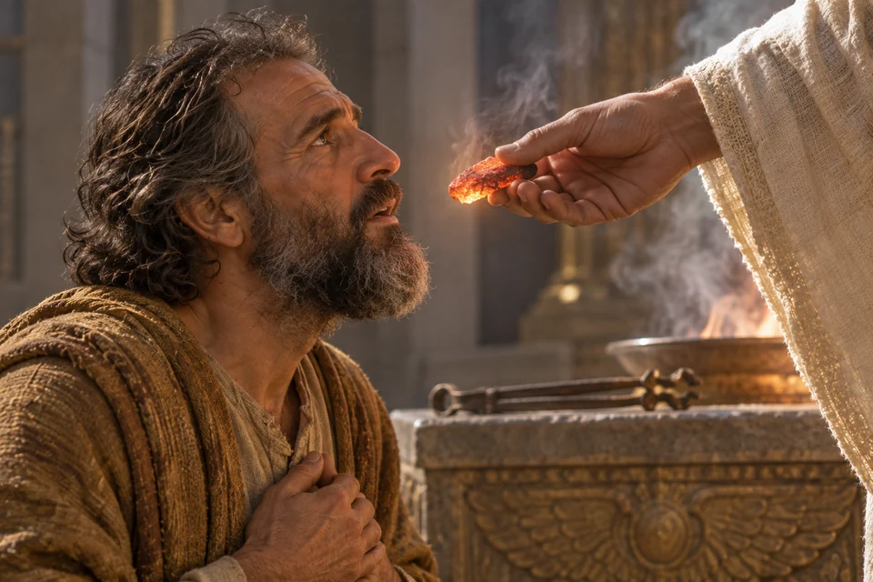
Explore and study
Isaiah answers the call
In Isaiah’s vision, a seraph brings a live coal to his lips. After the assurance that his sin is purged, Isaiah offers himself for the Lord’s work.
A directly preserved prophetic vision
The same commissioning vision in both records
Second Nephi preserves Isaiah’s account of his call. Read the movement from awareness of unclean lips to cleansing and willingness to serve. This is a direct textual connection, rather than two prophets having the same vision. The picture focuses on the coal and Isaiah’s response; the fuller chapter describes the seraphim and the Lord’s glory.
A library of sacred writings
The Bible took shape across centuries. The Old Testament preserves Israel’s law, history, poetry, wisdom and prophecy, chiefly in Hebrew with some Aramaic. The New Testament’s Gospels, Acts, letters and Revelation come from the early Christian world and survive in Greek. They witness of Jesus Christ and the life of His Church. Explore the Bible’s history.
Isaiah is one prophetic voice within that larger library. His words also became part of the record Nephi preserved.
{kind=link}
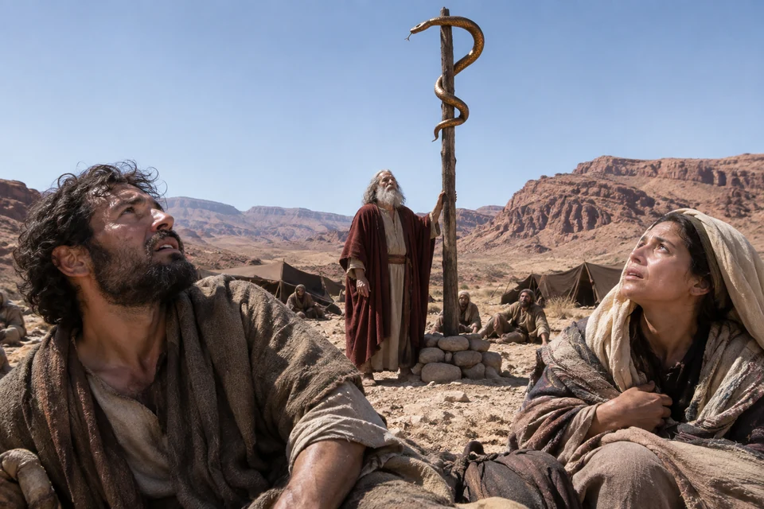
Explore and study
Moses raises the brass serpent
In the wilderness, the people are invited to look toward the serpent Moses has raised. Alma later recalls this act as a witness pointing to the Son of God.
An event recalled and interpreted
An earlier event becomes a witness of Christ
Numbers records the danger among Israel and the command to look and live. Alma explicitly recalls Moses and interprets the raised sign in relation to belief in the Son of God. John also preserves Jesus’ comparison with Moses’ act. Follow the connection from the wilderness event to its later explanations; the bronze serpent itself is not the Savior.
How biblical writings reached later readers
Texts were copied by hand before printing. The fourth-century Codex Sinaiticus contains the earliest complete surviving Christian New Testament; it is a later witness to the text, not an Apostle’s original manuscript. Explore Codex Sinaiticus.
Wycliffe-associated English translations drew on Latin. Tyndale’s printed New Testament appeared in 1526; the King James Version followed in 1611. Translation brought the writings into readers’ own language. Read the history of the English Bible.
The Book of Mormon’s history and witness
Reading, preserving and bringing forth a record
Follow the ancient narrative within the book, then the nineteenth-century account of its coming forth. Latter-day Saints receive the ancient account as scripture; surviving manuscripts also document the later translation and publication.
{kind=link}
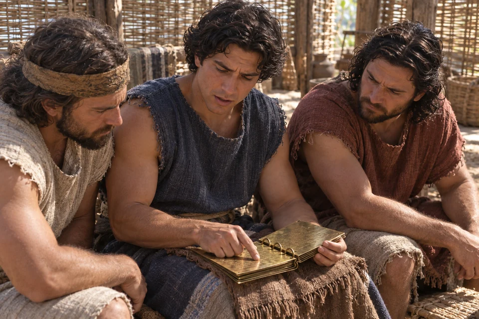
Explore and study
Nephi reads Isaiah to his brothers
Nephi turns to the writings on the brass plates and reads Isaiah to his brothers, seeking to help them believe in the Lord their Redeemer.
An explicit reading and a quoted chapter
The Book of Mormon invites us back into Isaiah
Nephi names his source and explains why he reads it: to persuade his people to believe in the Redeemer and apply scripture to their lives. The following chapter preserves material corresponding to Isaiah’s words to the house of Israel. Read the two chapters closely, noting differences as well as shared language. The act of reading is explicit; the exact room and arrangement of the gathering are not.
A scriptural heritage from Jerusalem
The Book of Mormon’s narrative begins with Lehi’s family around 600 BC. The brass plates contain the books of Moses, prophetic writings, a record of the Jews and a genealogy, as described in 1 Nephi 5:10–16. They connect the family to Israel’s scripture; they are not a complete modern Bible.
{kind=link}
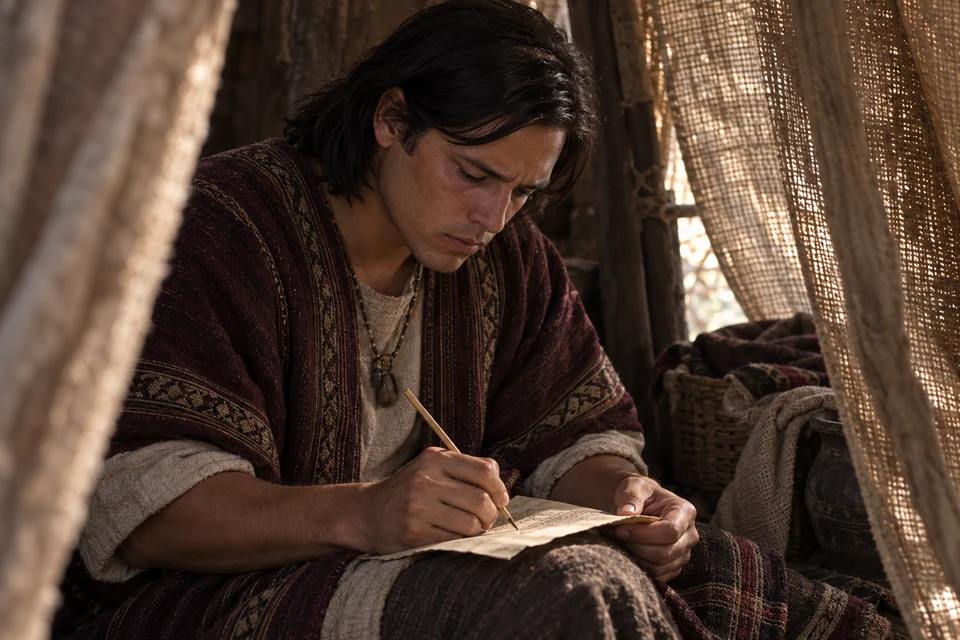
Explore and study
Alma keeps Abinadi’s words
After escaping the king’s servants, young Alma writes the testimony he has heard. Abinadi’s teaching includes Isaiah’s prophecy of the suffering servant.
Direct quotation within a preserved testimony
Isaiah’s words are quoted, heard and preserved
Mosiah presents Abinadi quoting Isaiah before explaining Christ’s redeeming work. Alma believes, speaks in Abinadi’s defense, flees and records his words while concealed. This passage connects biblical prophecy with a Book of Mormon witness and shows why preservation matters. The young man here is Alma the Elder, not his son Alma the Younger.
From individual records to an abridgment
Preservation continues across generations. Words of Mormon 1:1–11 describes Mormon selecting and joining records. Mormon 8:1–5 presents Moroni continuing after his father’s death. Distinct voices remain within the larger book.
{kind=link}
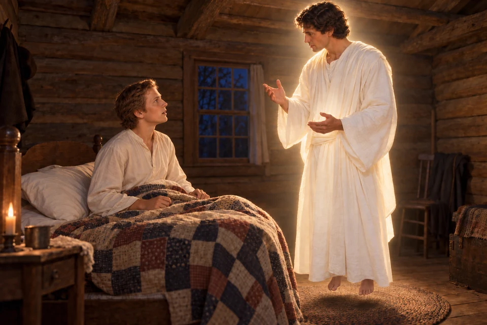
Explore and study
Moroni brings Malachi’s words to Joseph
In his account of the 1823 visit, Joseph remembers Moroni speaking of an ancient record and quoting biblical prophecies, including Malachi. The coming forth of the Book of Mormon is introduced within that scriptural setting.
A reported biblical quotation in Restoration history
An ancient prophet in the Restoration’s beginning
This is Joseph’s later account of Moroni’s visit, recorded in the Pearl of Great Price. He reports that Moroni quoted Malachi and gave different wording for part of the Elijah prophecy. Compare the passages rather than calling them identical. The scene belongs to the 1823 bedroom visit, when Joseph was seventeen, not the 1827 delivery of the plates.
1829–1830: translation and publication
Joseph Smith dictated most of the surviving text between April and June 1829. He described translating by God’s gift and power. Witness accounts discuss interpreters and a seer stone, including use of a hat to exclude light. The Church’s translation essay presents those accounts.
A printer’s manuscript was prepared, and E. B. Grandin’s Palmyra shop printed the first edition. It went on sale March 26, 1830. Explore the Joseph Smith Papers’ manuscript history. These publication records are distinct from the ancient history narrated within the book.
How the records work together
Joined witnesses, distinct voices
A quotation, a remembered event and an interpretation make different kinds of connections. These three scenes help us recognize the difference.
{kind=link}
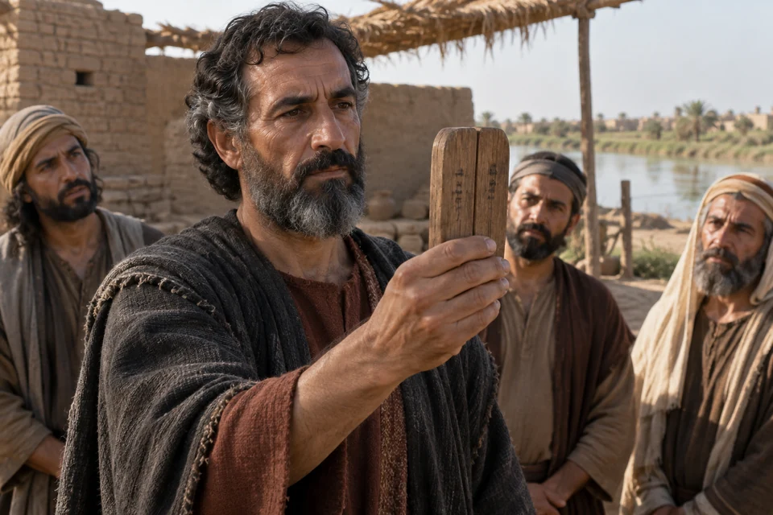
Explore and study
Ezekiel brings two sticks together
Ezekiel holds the two pieces together before his people. The sign belongs to a promise that divided Israel will be gathered and become one under the Lord.
A sign and a Latter-day Saint interpretation
One people and joined witnesses
Ezekiel explains the joining of Judah and Joseph as the reunion of a divided people. Latter-day Saints also understand the sign in connection with the Bible and Book of Mormon, as reflected in the Church’s chapter heading and cross-references. Lehi’s account speaks of writings from Joseph’s and Judah’s descendants growing together. This is an interpretive pairing; it does not mean Ezekiel names the Book of Mormon or quotes Lehi.
Articles of Faith 1:8 affirms both books. Their shared witness of Jesus Christ invites readers to keep both open, while respecting each passage’s own speaker and setting.
{kind=link}
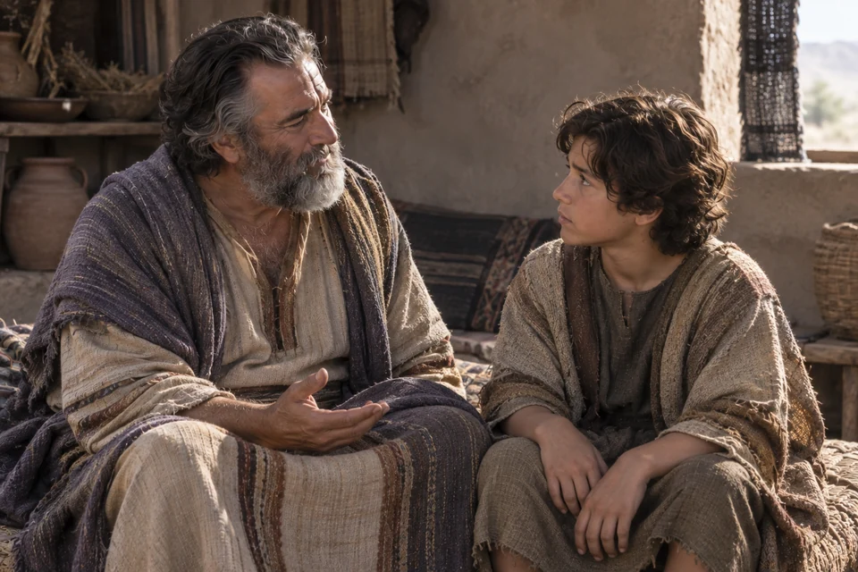
Explore and study
Lehi counsels his son Joseph
Near the end of his life, Lehi speaks to his youngest son about Joseph in Egypt and the Lord’s covenants. The family’s future is placed within a much older story.
An ancestor’s covenant and additional recorded prophecy
A covenant remembered across generations
Genesis preserves Joseph’s assurance that God will visit his people and bring them to the promised land. Lehi identifies himself as Joseph’s descendant and attributes a longer prophecy to that ancestor, including future writings and a seer. That longer prophecy is supplied by the Book of Mormon; it is not the wording of the Genesis verses. The boy in the picture is Lehi’s son Joseph, distinct from Joseph in Egypt and Joseph Smith.
Shared teachings about faith, repentance, baptism, resurrection and charity can bring one passage into conversation with another. A connection should help us notice what each writer contributes.
{kind=link}
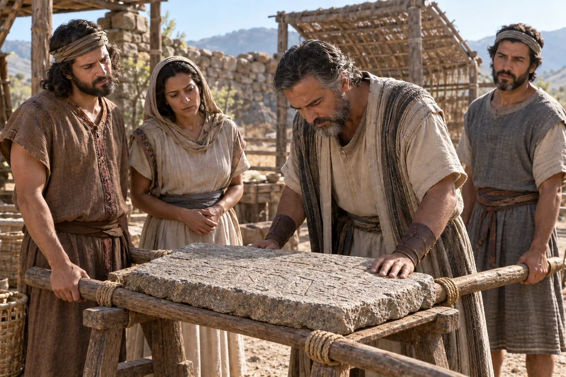
Explore and study
Mosiah interprets the engraved stone
A large stone bearing engravings is brought to Mosiah. Omni says its account concerns Coriantumr and a people whose ancestors came from the tower when languages were confounded.
A shared narrative reference
A record that reaches back to the tower
Genesis tells of Babel and the confusion of language. Omni describes a stone record that connects an earlier people with that event. The relationship is a shared narrative reference, not a quotation of Genesis. This Mosiah is Benjamin’s father, often called Mosiah I, not Benjamin’s son of the same name. The picture illustrates the account; it does not present an identified archaeological artifact.
For your own comparison, name the speaker, audience and setting before drawing a conclusion. Read the surrounding verses and keep questions that the passages leave unanswered.
The Savior at the heart of both books
His actions and His words illuminate one another
Read five moments from Christ’s mortal ministry alongside Book of Mormon prophecy and teaching. Each pair invites us to understand Him more fully while keeping the events and speakers clear.
{kind=link}
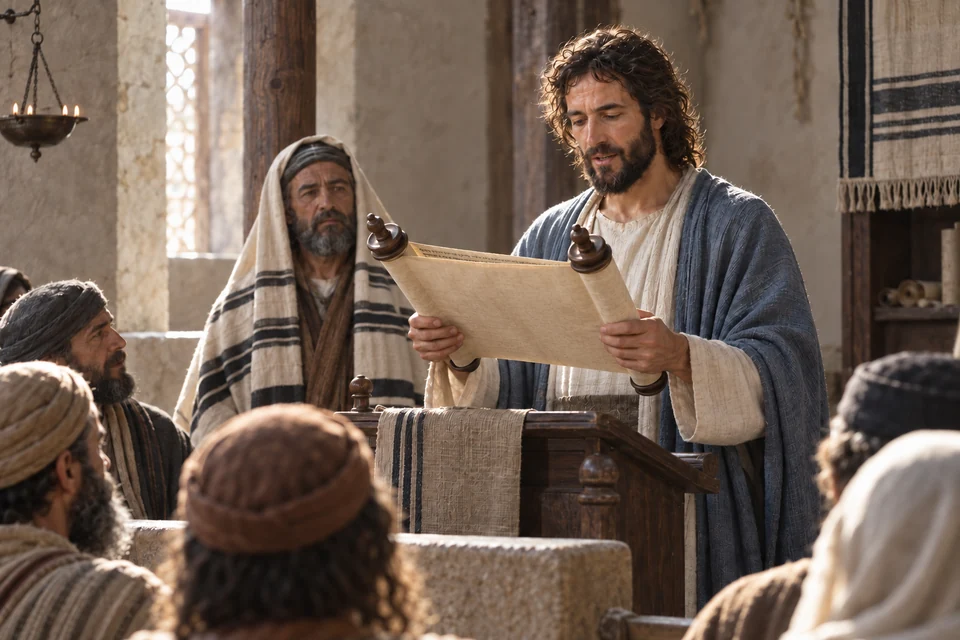
Explore and study
Christ opens Isaiah in Nazareth
Standing in the synagogue, Jesus reads Isaiah’s words about good news, healing and deliverance. He then declares the scripture fulfilled in His listeners’ hearing.
Christ’s shared invitation to hear Isaiah
Isaiah’s witness matters in both records
Luke presents Jesus reading Isaiah and identifying His mission with the prophecy. In Third Nephi, Christ directs His hearers to search Isaiah’s words diligently. These are different occasions: Third Nephi does not repeat the Isaiah 61 quotation recorded in Luke. Read them together to consider why Christ turns His listeners toward the prophets and how their words help us recognize His work.
{kind=link}
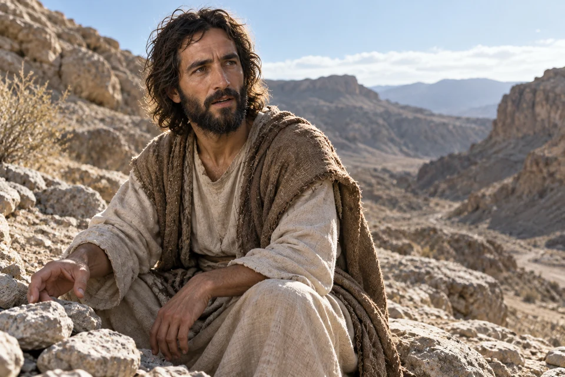
Explore and study
Christ answers temptation with scripture
Hungry after His fast, Jesus refuses the temptation to turn stones into bread. He answers with the words of Moses, trusting the Father rather than yielding.
A Gospel event and Abinadi’s teaching
Tempted, yet faithful to the Father
Matthew records a particular temptation and Jesus’ answer from Deuteronomy. Abinadi teaches that Christ suffers temptation without yielding to it. The Gospel event gives us a moment to consider beside that prophetic teaching. Mosiah does not narrate this wilderness encounter. Notice both the Savior’s hunger and His resolve, then consider how scripture can guide a difficult choice.

Explore and study
A man is lowered through the roof
Unable to reach Jesus through the crowd, four people open the roof and lower the bed carrying a man who cannot walk. Jesus receives him, speaks forgiveness and commands him to rise.
A prophetic description and a Gospel encounter
Benjamin’s prophecy beside a healing in Capernaum
Benjamin describes the Lord coming among people with power to heal, including enabling the lame to walk. Mark gives a particular account of Christ’s healing and authority to forgive sins. Benjamin’s words are a prophetic description, not a second telling of this roof-top event. Read both passages, attending to the man’s need, his helpers’ faith and the Savior’s response.
{kind=link}
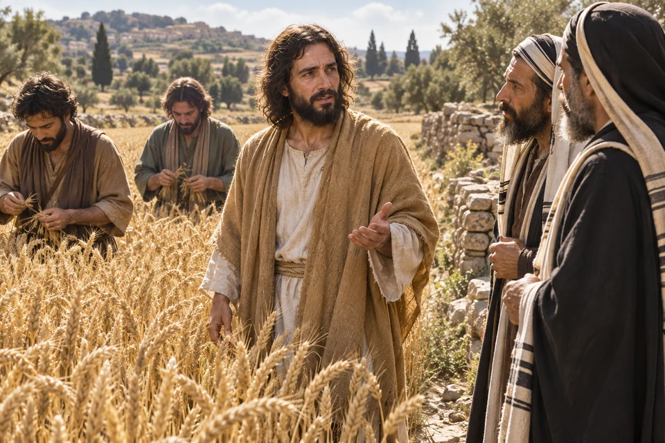
Explore and study
Christ answers in the grainfield
As His disciples pluck ears of grain, Jesus answers a question about the Sabbath. He recalls David’s experience and teaches His authority as Lord of the Sabbath.
Related teaching in distinct settings
The Lord who gave and fulfilled the law
The grainfield conversation concerns the Sabbath and Christ’s authority. After His Resurrection, Third Nephi records Him explaining that He gave the law of Moses and fulfilled it. These passages belong to different moments in His ministry. The grainfield dispute does not itself end the law; the later explanation helps readers consider the law in relation to the Savior who gave it.
{kind=link}
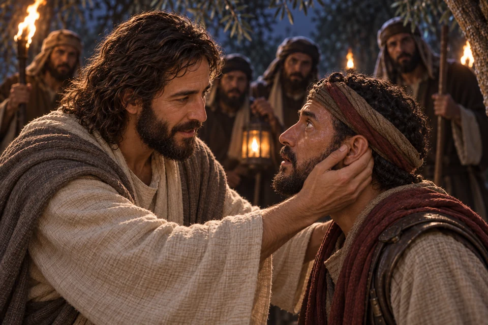
Explore and study
Mercy in the moment of arrest
During His arrest, Jesus touches and heals the servant’s right ear. Amid fear and confrontation, His response is an act of mercy.
Christ’s action beside His teaching
Love for enemies, taught and lived
Luke records the healing; John identifies the servant as Malchus and the disciple with the sword as Peter. Third Nephi records Christ’s teaching to love enemies and pray for those who persecute. Malchus does not appear in the Book of Mormon. Reading the teaching beside this Gospel action lets us consider what mercy looks like when a person faces hostility.
Choose a paired reading
Twelve paths between the books
Choose a topic to reveal the two passages and a question to carry into your reading.
The suffering servant
Direct quotation
Abinadi quotes Isaiah; read his surrounding explanation in the next chapter to see how he applies the prophecy to Christ.
Malachi’s message
Direct quotation
Third Nephi presents Jesus giving Malachi’s words to His listeners. Notice the account’s instruction to record them.
Other sheep
Explicit connection
Third Nephi explicitly connects its people with Jesus’ statement about other sheep. That identification is supplied by the Book of Mormon; John’s passage alone does not name the Americas.
Records and gathering
Latter-day Saint reading
Ezekiel’s immediate explanation concerns Judah and Joseph becoming one people. Latter-day Saints also connect the joined sticks with joined scriptural witnesses; Second Nephi speaks of writings growing together. Keep the original national-gathering context visible.
The Beatitudes
Parallel teaching
Compare the promises to the meek, merciful and peacemakers. Notice the different openings and the post-Resurrection setting in Third Nephi.
Following Christ in baptism
Account and explanation
Matthew 3:13–17
2 Nephi 31:4–12
Matthew records Jesus’ baptism. Nephi reflects on why the Holy One was baptized and what His example asks of His followers.
The pattern of prayer
Parallel teaching
Read the prayers closely, including wording that differs. Both direct disciples toward the Father, His will, forgiveness and deliverance.
Bread and remembrance
Distinct covenant settings
Follow the movement from Christ’s body and covenant to remembrance, obedience and the companionship of His Spirit.
Welcoming children
Distinct encounters
Mark preserves His welcome and blessing; Third Nephi describes His personal blessing, prayer and tears. Neither account needs to erase the other’s details.
The Resurrection
Shared doctrine
1 Corinthians 15:20–22
Alma 11:42–45
Paul connects resurrection with Christ. Amulek explains the reunion of body and spirit and judgment before God. Distinguish resurrection from the further question of how we live before Him.
Charity
Closely related teaching
1 Corinthians 13:4–8
Moroni 7:45–48
Compare the descriptions of charity, then notice Moroni’s preservation of Mormon’s invitation to pray for this love. The shared wording is a textual observation, not by itself proof of a historical relationship.
Blessing all families
Covenant connection
Genesis 12:1–3
3 Nephi 20:25–27
Read the promise to Abraham beside Christ’s teaching about the covenant’s children. Both place blessing beyond one household; Third Nephi connects blessing with turning from iniquity.
How cross-references became easier to follow
The Church’s 1979 English Bible and 1981 triple combination added expanded cross-references and study helps. These editorial tools help readers move among the standard works; they are distinct from the ancient text. Explore the scripture editions.
Watch and study
Does Additional Scripture Diminish the Bible?
{kind=link}
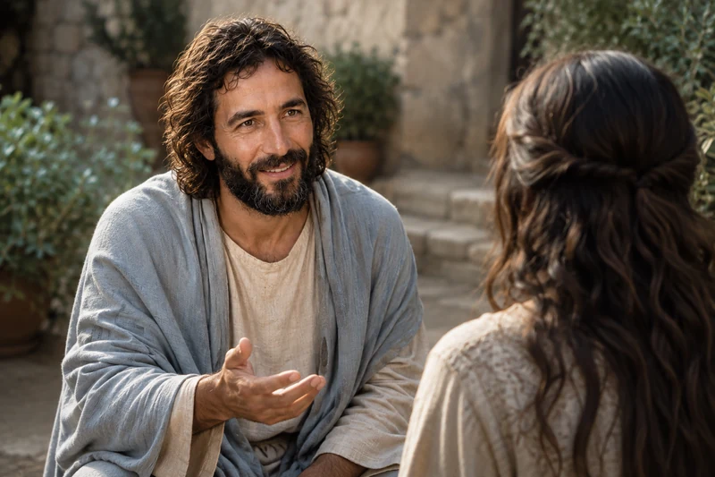
Explore and study
Consider the witness at Bountiful
At Bountiful, Jesus Christ teaches people who have come forward to know Him. His words stand beside the New Testament witness, joining both records in testimony of the risen Savior.
In his April 2008 conference message My Words ... Never Cease, Elder Jeffrey R. Holland explains the Latter-day Saint belief in continuing revelation and an open scriptural canon. He affirms the Bible's value while explaining why Latter-day Saints welcome additional witnesses. The source includes both the full video and its transcript.
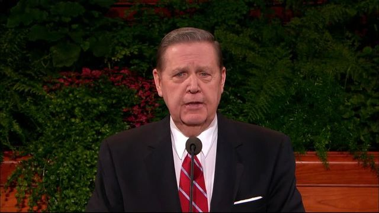
Listen or read with a specific question: What does he mean when he says further revelation supports what God has already revealed? Then turn to 3 Nephi 11:10-17. Compare this encounter with Mary's witness in John 20. Keep the question of scriptural authority distinct from your observations about the two texts, and preserve any unresolved questions for further study.
A Guided Comparison: Grace and Discipleship
Explore and study
Compare the accounts with care
Two open books rest side by side, each bearing its own witness of the risen Jesus Christ. John and Third Nephi lead readers toward the same hope: to know the Savior and believe in Him.
Begin with Ephesians 2:8-10 and 2 Nephi 31:19-21. Read the surrounding paragraphs rather than extracting a single phrase. Paul emphasizes salvation as a gift and speaks of good works; Nephi directs continuing disciples to rely on Christ while living with hope and love.
Keep two columns in a notebook: what this passage says, and what I infer from it. Ask what each writer emphasizes and what problem or invitation the passage addresses. The two accounts do not need to use identical vocabulary to be compared thoughtfully. Where their wording raises a question, preserve the question instead of forcing a quick agreement.
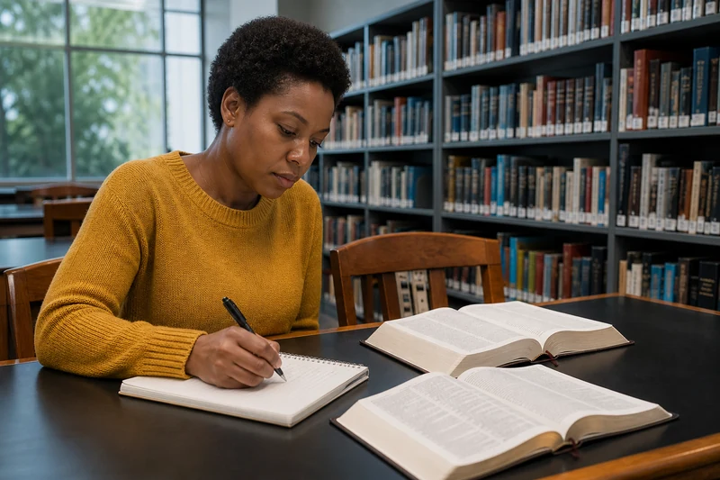
Explore and study
Read first, then compare
A woman compares two open books and records notes at a library desk. Ephesians joins salvation by grace with a life created in Christ Jesus for good works.
Let the next passage answer a real question
If you wonder what faith looks like in daily life, James 2:14-18 examines the response to a person without adequate food or clothing. As a reflection, consider whether your study is changing how you notice other people. That application grows from the passage's example; it is not a measure by which to judge someone else's private faith.
What if I accept the Bible but am unsure about the Book of Mormon?
You can compare the texts without pretending the question of authority is settled. Read each as it presents itself, identify shared and differing teachings, and then investigate the reasons Latter-day Saints accept the additional record. Respectful study leaves room for a reader to reach their own conclusion.
Three Study Sessions That Keep Both Books Open
Explore and study
Discover what another reader sees
On a park bench, an older woman and a younger man compare what they have read. Each book adds another witness, and their conversation keeps returning to Jesus Christ.
These focusChrist study suggestions offer a way to explore the sources at your own pace.
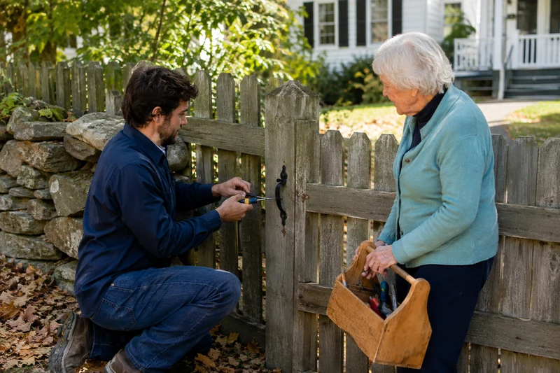
Explore and study
Let charity guide the conversation
A man repairs a wooden gate while an older woman steadies the tools. Working side by side, they show the patient, practical kindness Paul describes as charity.
Session 1: Scripture opens understanding
Read Luke 24:13-35. On the road to Emmaus, two disciples describe their disappointed hopes. Jesus interprets scripture concerning Himself, and they later recognize Him as He breaks bread.
Then read 3 Nephi 17:1-3, where listeners are given time to ponder and pray for understanding. Compare the role of scripture, conversation, reflection, and time. Write one question that would benefit from a slower second reading.
Session 2: Love gives study a direction
Read 1 Corinthians 13:1-13 and Moroni 7:43-48. Both describe charity through qualities such as patience and kindness. Paul weighs spiritual gifts and knowledge against love; Mormon's teaching, recorded by Moroni, invites prayer to be filled with Christ's love.
Choose one quality to practice during a real interaction. Afterwards, record what was difficult and what you want to learn. Allow the passages to question your habits as well as inform your beliefs.
Session 3: Review without forcing a conclusion
Look back over your notes. Name a teaching both passages emphasize, a detail that belongs to only one account, and a question you still cannot answer. Read the verses around that question before searching for another cross-reference.
If studying with someone from another Christian tradition, ask which text they would add and why. You can learn from their reasoning while being clear about which books each of you accepts as scripture. The aim of this session is careful understanding and an honest next question.
{kind=link}
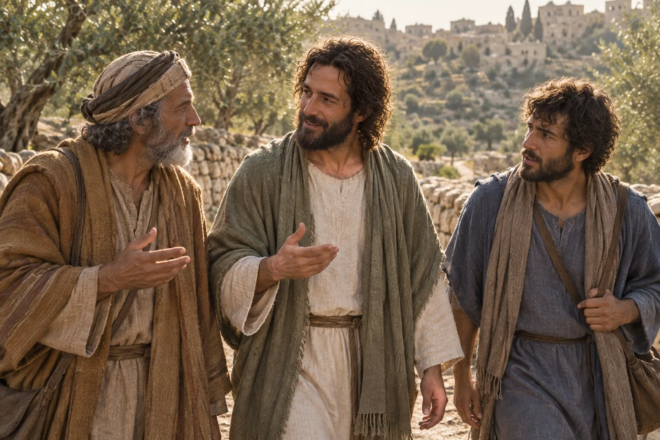
He opens the scriptures along the way
Jesus walks with two disciples and explains the scriptures concerning Himself. Return to their conversation slowly, and notice how understanding grows before recognition.
Does a shared teaching establish the authority of both books?
A textual comparison can show a shared teaching. Deciding that a book is divinely authoritative involves further questions. Keep those questions visible as you study. The Book of Mormon introduction discusses the invitation to read, ponder, and pray, alongside the need to distinguish historical and spiritual inquiries.
Let two witnesses shape one act of discipleship
1 Corinthians 13 invites a reader to weigh knowledge and spiritual gifts alongside charity. Return to the comparison you have made and consider how learning about Christ might change a real conversation.
What did each witness help you notice?
Choose one passage from each book already studied above. Write one sentence about what each says of Jesus Christ. Which detail would have been missing if you had read only one? Keep each speaker and setting beside your notes.
How will charity shape the discussion?
Think of someone who understands these books differently. What could you ask to understand their reading before explaining yours? Choose one quality from Paul’s description of charity to practice when a question becomes difficult.
What will you return to?
Save a pair of passages and one unresolved question. Read the surrounding chapters on your next visit. What new context would cause you to revise your first impression? A patient second reading can become part of your worship.
Official Sources and Further Study
- How the Bible and the Book of Mormon Work Together
- Another Testament of Jesus Christ
- Read the Scriptures in Gospel Library
Where would you like to go next?
Learn the Book of Mormon’s purpose
Explore its central witness and the different questions readers bring to it.
Understand Christian similarities and differences
Follow the question of scriptural authority into a respectful comparison of belief.
Follow the Restoration’s history
Place the Book of Mormon’s publication within the wider story of the Restoration.